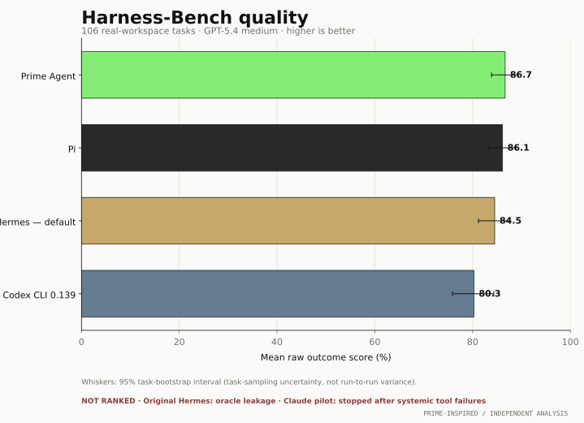
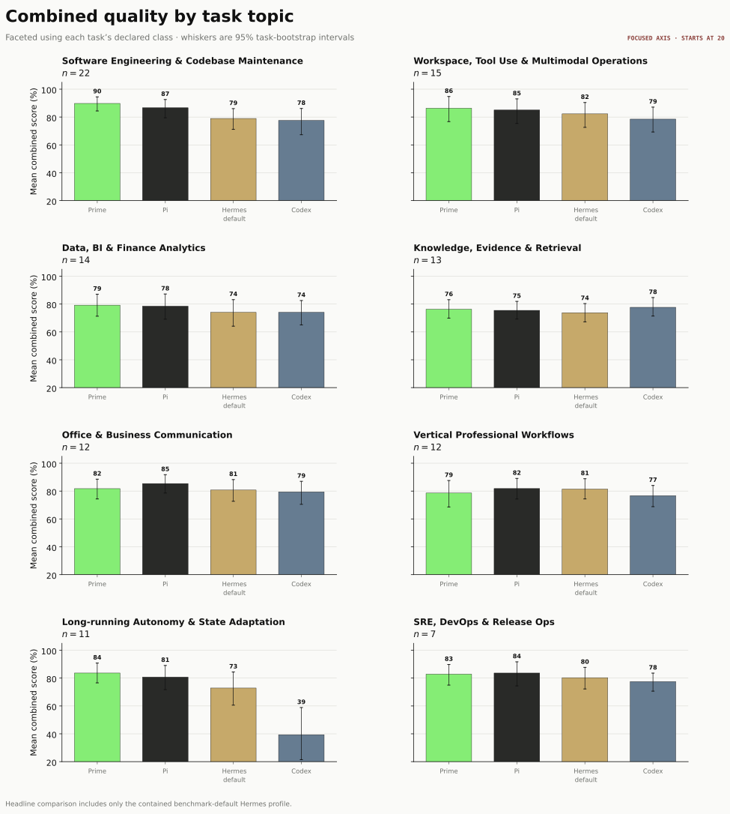
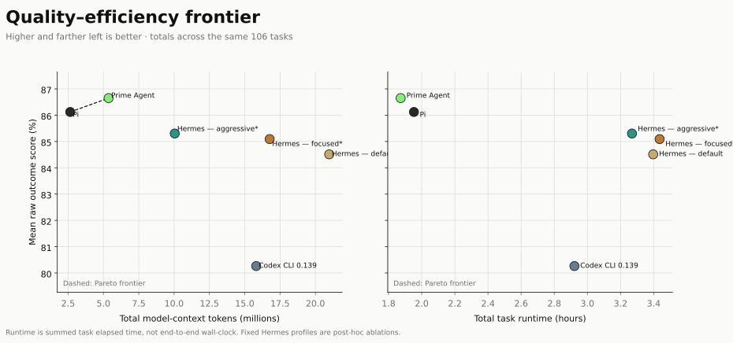
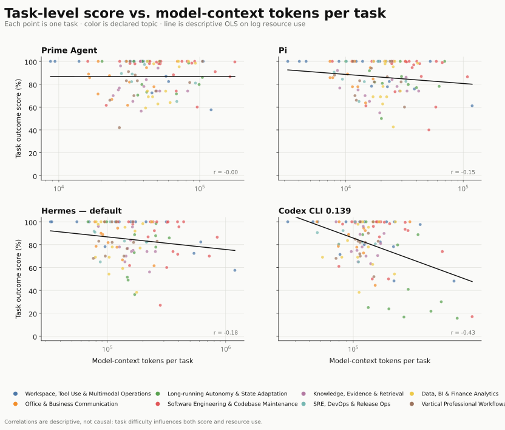
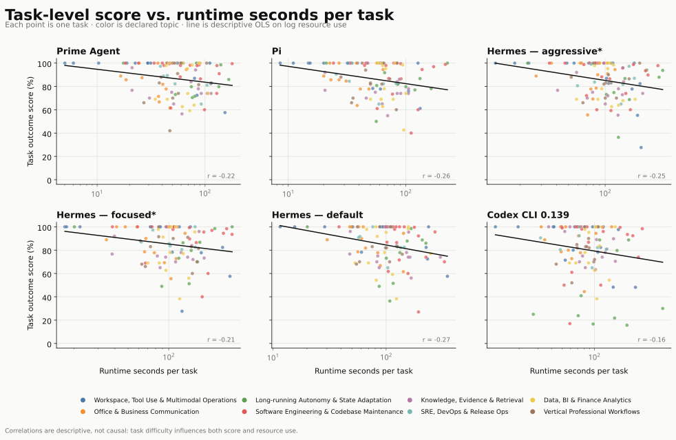

Quality and efficiency across agent harnesses
A like-for-like comparison on 106 real-workspace tasks using GPT-5.4 medium. This interim edition includes only complete, audited datasets.
Overall quality
Raw outcome score is used because full-trace process grading is not yet available for every option.

Score, tokens, and runtime
| Option | Score | Reported input | Reported cache read | Output | Total tokens | Calls | Runtime |
|---|---|---|---|---|---|---|---|
| Prime Agent | 86.65% | 1,387,583 | 3,663,872 | 314,356 | 5,365,811 | 670 | 1.87 h |
| Pi | 86.12% | 853,187 | 1,489,152 | 308,079 | 2,650,418 | 558 | 1.95 h |
| Hermes — aggressive* | 85.30% | 1,808,935 | 7,692,672 | 544,425 | 10,046,032 | 921 | 3.27 h |
| Hermes — focused* | 85.09% | 2,502,152 | 13,687,296 | 573,363 | 16,762,811 | 1,022 | 3.44 h |
| Hermes — default | 84.51% | 2,292,231 | 18,115,968 | 567,375 | 20,975,574 | 966 | 3.40 h |
| Codex CLI 0.139 | 80.26% | 15,304,660 | 13,760,384 | 505,527 | 15,810,187 | 649 | 2.92 h |
Token fields follow each native source and components may overlap (notably Codex reported input and cache read); use Total for cross-harness comparison. Reasoning tokens are not added again. Runtime is summed task elapsed time.
Audited composition
Codex: 105 entries from the initial full manifest plus the second, valid operational correction for task 023. The initial task and failed first correction remain preserved and excluded.
Aggressive Hermes: 100 initial fixed-profile results plus separately preserved corrections for tasks 091, 094, 096, 097, 099, and 106 after a terminal audit classified them as watchdog-truncated infrastructure failures.
Quality by topic

Quality–efficiency frontier

Task-level detail
The regression lines are descriptive only; task difficulty affects both score and resource use.


Scope and exclusions
Original Hermes is excluded after confirmed access to oracle/ground-truth material. The contained benchmark-default rerun is the Hermes headline result. Fixed focused/aggressive profiles are post-hoc ablations and are never pooled with it.
Claude Code Opus 4.6 is pending and will be added only after its evaluation and audit complete. Tasks 008 and 013 also carry the benchmark’s documented oracle-quality-LLM comparability caveat.
GENERATED FROM AUDITED PER-TASK ARTIFACTS · SNAPSHOT DATA INCLUDED